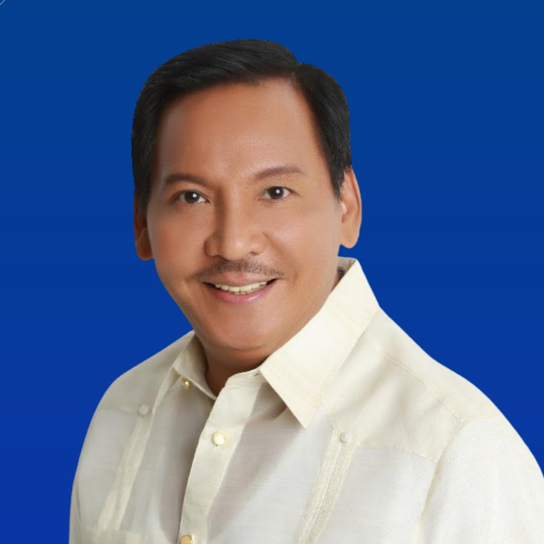
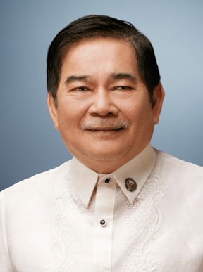
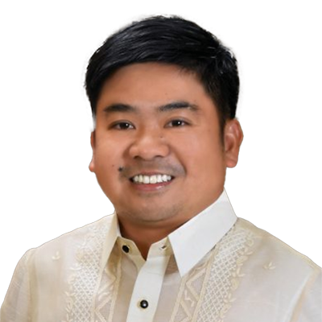
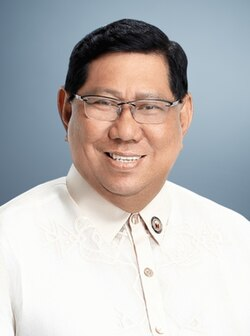
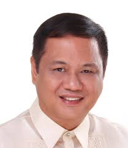

List of Caloocan City Mayors
1988 – Present
Why Start from 1988?
We began the timeline from 1988 because this period marked the return of democratic
governance after the EDSA Revolution. Since then, Caloocan has undergone rapid
modernization, becoming one of the busiest and most populous cities in Metro Manila.
Mayors of Caloocan (1988 – Present)
Macario "Boy" Asistio Jr.
Mayor (1988 – 1995)
Known for grassroots leadership. His administration focused on social programs and maintaining political presence in Caloocan.
View Photo Large
Reynaldo "Rey" Malonzo
Mayor (1995 – 2004)
A former actor and politician. Malonzo’s leadership emphasized urban development, infrastructure, and improved social services.
View Photo Large

Enrico "Recom" Echiverri
Mayor (2004 – 2013)
Previously a congressman. His terms modernized city healthcare, education, and infrastructure development in Caloocan.
View Photo Large

Oscar "Oca" Malapitan
Mayor (2013 – 2022)
He improved public healthcare and built more school facilities. His governance focused on education and livelihood programs.
View Photo Large

Dale Gonzalo Malapitan
Mayor (2022 – Present)
The current mayor, son of former Mayor Oscar Malapitan. His leadership continues projects in modernization, safety, and education.
View Photo Large
Vice Mayors of Caloocan (1988 – Present)
Celestino Rosca Vice Mayor (1988 – 1992)
Reynaldo "Rey" Malonzo Vice Mayor (1992-1995)
Both Served alongside Mayor Macario "Boy" Asistio Jr.
NO PICTURES AVAILABLE
Nancy Quimpo Vice Mayor (1995 – 1998)
Oscar "Oca" Malapitan Vice Mayor (1998-2001)
Luis "Tito" Varela Vice Mayor (2001-2004)
Both Served alongside Mayor Reynaldo "Rey" Malonzo.
NO PICTURES AVAILABLE

Edgar Egay Erice
Vice Mayor (2004 – 2010)
Served alongside Mayor Enrico "Recom" Echiverri.
View Photo Large

Macario "Maca" Asistio III
Vice Mayor (2013 – 2022)
Served alongside Mayor Oscar "Oca" Malapitan.
View Photo Large
Anna Karina Teh-Limsico
Vice Mayor (2022 – Present)
Currently serving alongside Mayor Dale Gonzalo Malapitan.
View Photo Large
Leadership & Governance
Caloocan has been home to influential leaders who contributed to its transformation
into a bustling hub of commerce, education, and history. From grassroots leadership
to modernization, each mayor has left a mark in shaping the city's identity.
×
Macario "Boy" Asistio Jr. (Mayor 1988–1995)
×
Reynaldo "Rey" Malonzo (Mayor 1995–2004)
×
Enrico "Recom" Echiverri (Mayor 2004–2013)
×
Oscar "Oca" Malapitan (Mayor 2013–2022)
×
Dale Gonzalo Malapitan (Mayor 2022–Present)
×
Celestino Rosca (1988–1992) & Reynaldo "Rey" Malonzo (1992–1995)
×
Nancy Quimpo (1995–1998), Oscar "Oca" Malapitan (1998–2001), Luis "Tito" Varela (2001–2004)
×
Edgar "Egay" Erice (Vice Mayor 2004–2010)
×
Macario "Maca" Asistio III (Vice Mayor 2013–2022)
×
Anna Karina Teh-Limsico (Vice Mayor 2022–Present)